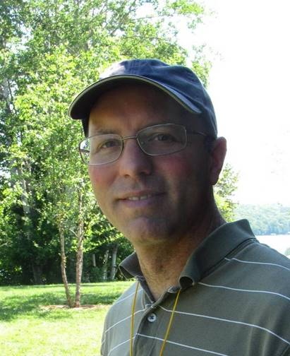

About Me
I am a Professor in the Department of Psychological Sciences and currently serve as the Provost Liaison for Academic Innovation at William & Mary. My research focuses on the neural basis of attention, learning, and memory.
View Full CVAcademic and Administrative Positions
- 2025-current: Provost Liaison for Academic Innovation
- 2017-current: Professor, Department of Psychological Sciences
- 2016-current: Faculty Affiliate, Program in Neuroscience
- 2022-2025: Provost Faculty Fellow
- 2016-2022: Chair, Department of Psychological Sciences
- 2011-2015: Director, Neuroscience Program
Research Interests
My general area of research interest is the neural basis of attention, learning, and memory. We have several current lines of research related to these topics:
- Role of the cholinergic system in attention: Our work suggests that cholinergic muscarinic receptors, particularly the M1 receptor, are important for mediating the effects of cortical acetylcholine on attention.
- Role of orexins in attention: In collaboration with Dr. Jim Fadel, we are testing the role of the orexin system in attention, particularly its projection to the basal forebrain.
- Role of orexins in schizophrenia: We are exploring whether dual orexin receptor antagonists (DORAs) can reverse attentional deficits in animal models of schizophrenia.
- Autism Research: I am a co-PI in an autism lab with Professor Cheryl Dickter. You can find more information here.
Selected Recent Publications
- Dickter, C. L. & Burk, J. A. (in press) Implicit and explicit attitudes towards autistic individuals: a review. Autism in Adulthood.
- Bierce LF, Dickter CL, Burk JA (in press) Simulated contact and attitudes toward autistic adults: effects of gender of the autistic adult and mediation by intergroup anxiety. Journal of Autism and Developmental Disorders.
- Dickter CL, Chang I, Burk JA, Bravo AJ (2025) Autistic traits, emotion regulation, social anxiety, drinking to cope, and problematic alcohol use: A cross-cultural examination among young adults from seven countries. Substance Use and Misuse, 60, 766-774.
- Maness EB, Blumenthal SA, Burk JA (2023) Dual orexin/hypocretin receptor antagonism attenuates NMDA receptor hypofunction-induced attention deficits in a rat model of schizophrenia. Behavioural Brain Research, 450, 114497.
Current Lab Students
- Adelaide Griffey
- Rose Hsieh
- Vi Nguyen
- Lillian Shee
- Rayaan Siddiqui
Courses
Fall 2025: PSYC 445 Psychopharmacology
Contact Information
Email: jabur2@wm.edu
Office Phone: 757-221-3882
Address:
1159 Integrated Science Center
William & Mary
Williamsburg, VA 23187